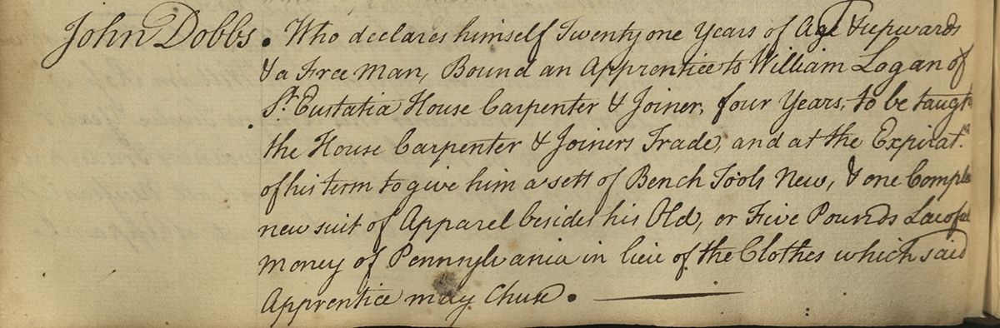
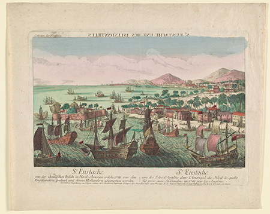

The Journey to Indenture
Between 1771 and 1773, in the midst of the American Revolution, over five thousand people were recorded as entering into contracts of indenture at the Port of Philadelphia. How did they travel to Philadelphia? And where did they come from?1
Most people arrived by ship, traveling across the Atlantic, as shown in the map below, in search of a better life than they had at home. Others came from Philadelphia itself, voluntarily entering into indenture contracts or through coercion. Children were recruited from House of Employment and forced to serve lengthy periods of servitude.
We can use the data to create maps that show us patterns of movement. Visualizing the data in this way also helps us to see individual records that are more unusual. Find out more in the maps below.
The Story of John Dobbs

{kind=link}
{kind=link}

{kind=link}
When Dobbs' contract of indenture expired, he was to be given "a sett of bench tools new, and one compleat new suit of apparel besides his old, or five pounds laful money of Pa. in lieu of the clothes which said apprentice may choose." The provision of these goods - tools, clothes or a sum of money - was a legal requirement. These were called ‘freedom dues’ and were only paid upon completion of contracts thus acting as an incentive to serve its full term.4
Next Topic Gendered Indenture
- 1. Data note: We made several decisions when processing this data. First, we entered decimal latitude and longitude coordinates to the center of the smallest known geographical location (town, county, country). The maps depicting the movement of people to American is comprised only of records where we know the point of departure and location of bondage. This is approximately 2,000 records from a total of over 5,000. The sample on this map is thus not representative of the whole.
- 2. This map of the island from 1790 details St. Eustatia to be a corruption of St. Eustatius.‘The Island of St. Eustatius Corruptly St. Eustatia - Norman B. Leventhal Map & Education Center’ Accessed 27 June 2019.
- 3. Enthoven, Victor. ‘“That Abominable Nest of Pirates”: St. Eustatius and the North Americans, 1680—1780’. Early American Studies 10, no. 2 (2012): 239–301. pg. 246
- 4. Grubb, Farley. ‘The Statutory Regulation of Colonial Servitude: An Incomplete-Contract Approach’. Explorations in Economic History 37 (1) (2000): 42–75. pg. 43